No es un modelo 3D completo. Son dos capas de la imagen oficial con relieve, curvatura, paralaje (±15°) y animación por shader.
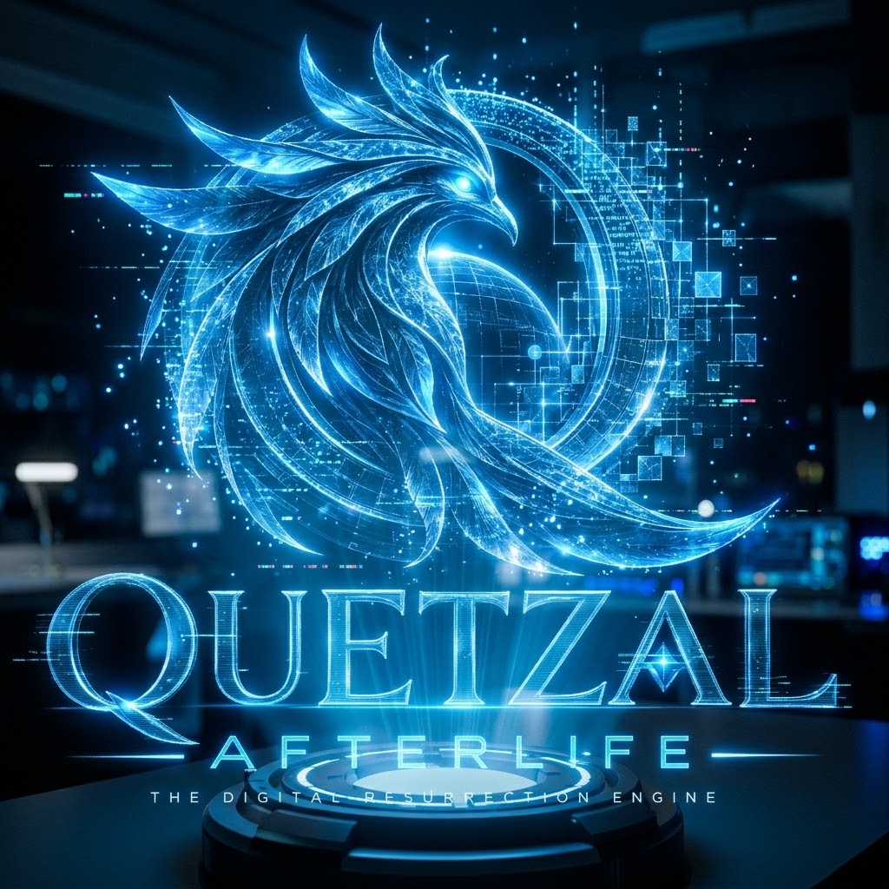
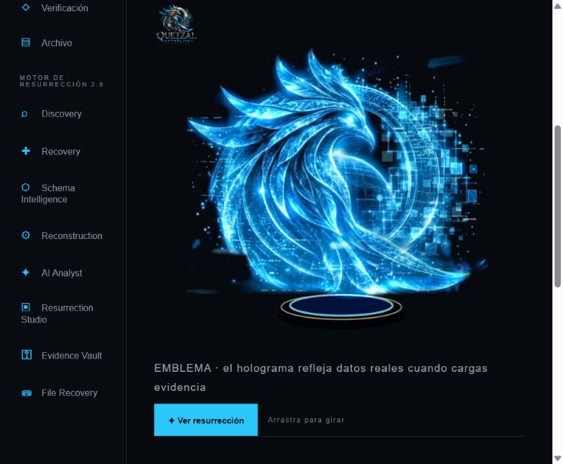
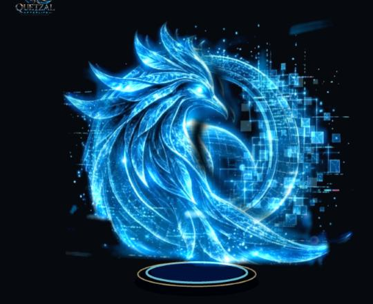
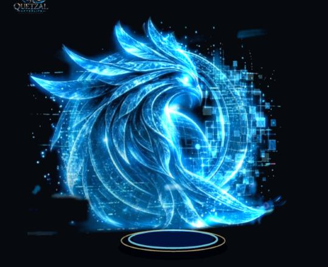
Celdas negras = registros perdidos disueltos; celdas doradas = recuperados con daño. La materialización parte de la cabeza.
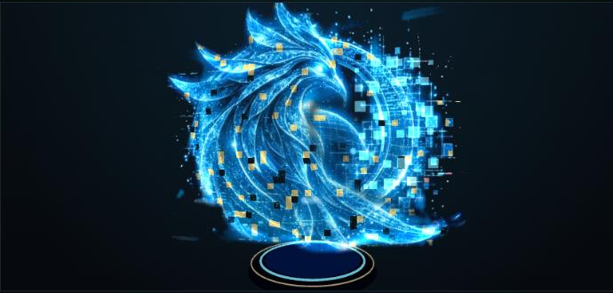
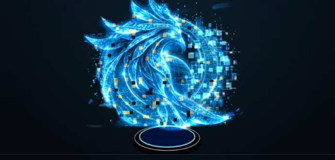
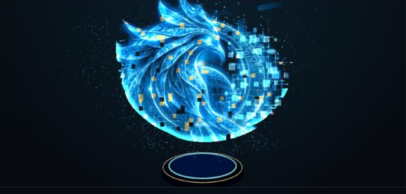
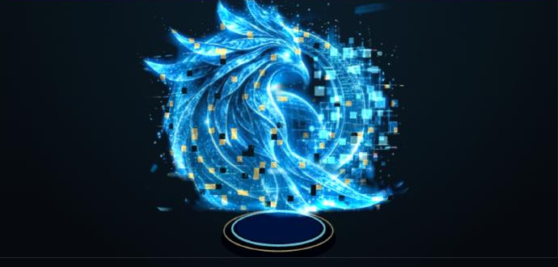
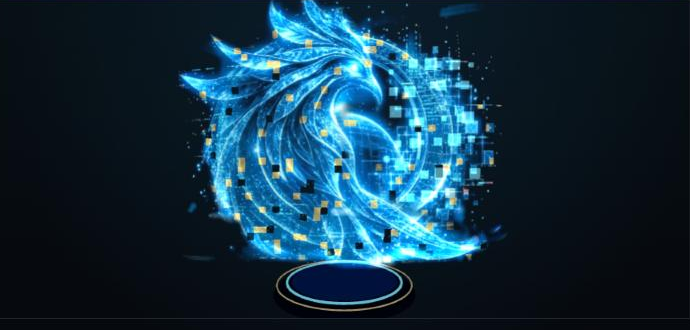
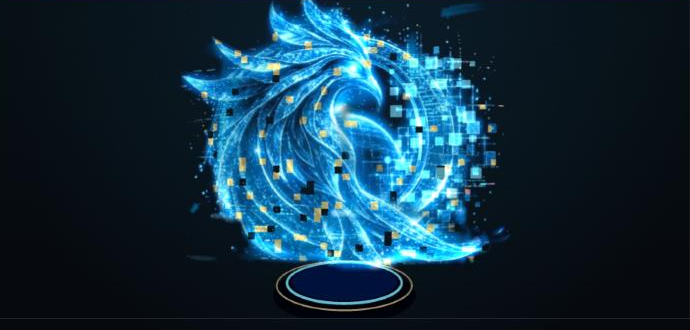
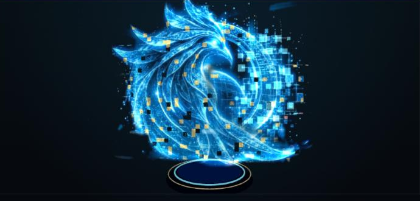
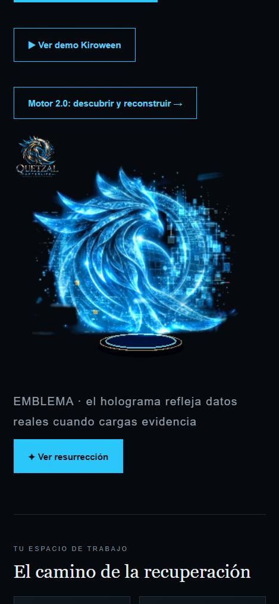